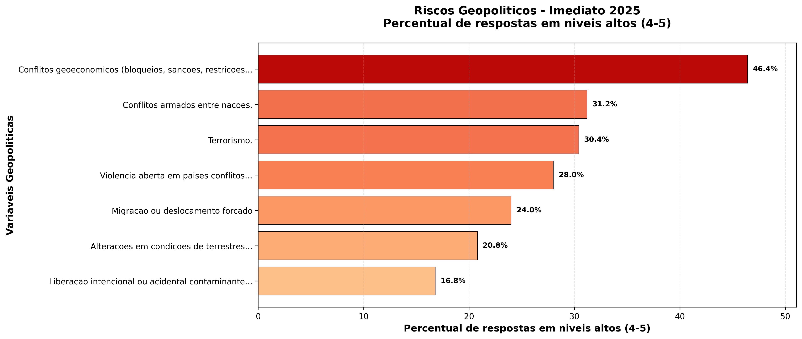

9 Análise de Riscos Geopolíticos
Esta seção apresenta a análise detalhada dos riscos geopolíticos identificados no questionário, organizados por horizontes temporais e variáveis específicas.
9.1 Visão Geral dos Riscos Geopolíticos
Os riscos geopolíticos foram avaliados em três horizontes temporais:
- Imediato (2025): Riscos que requerem atenção imediata
- Curto Prazo (2026-2027): Riscos emergentes que demandam planejamento
- Longo Prazo (até 2035): Riscos estratégicos que requerem visão de futuro
9.2 Panorama do Período Imediato

- Conflitos geoeconômicos: Mediana 3.0, 46,4% das respostas em risco alto
- Conflitos armados entre nações: Mediana 2.0, 31,2% em risco alto
- Violência em países parceiros: Mediana 2.0, 28,0% em risco alto
9.3 Análise Temporal da Dimensão Geopolítica
- Conflitos geoeconômicos: Mediana evolui de 3.0 (46,4% em risco alto) para 4.0 (60,0%) no longo prazo
- Conflitos armados: Percentual em risco alto sobe de 31,2% para 44,0% entre 2025 e 2035
- Terrorismo: Risco alto cresce de 30,4% para 40,8%, exigindo reforços constantes de segurança
Embora com menor número de variáveis (5), os riscos geopolíticos demonstram alta relevância, com trajetórias temporais distintas que refletem a volatilidade do cenário internacional e seu impacto direto nas operações portuárias.
9.3.1 Insights da Análise Temporal Geopolítica
A análise temporal dos riscos geopolíticos revela padrões de volatilidade e crescente preocupação:
9.3.1.1 Piora Geopolítica Moderada
- Delta médio de +0,40: Segunda maior piora entre as dimensões
- 2 variáveis com piora crítica (+1.0 ponto): Terrorismo, liberação de agentes biológicos
- Tendência de deterioração consistente: A maioria dos riscos mostra piora progressiva
9.3.1.2 Padrões Específicos Identificados
- Conflitos Geoeconômicos como Principal Risco: Mantém-se persistentemente alto em todos os períodos
- Instabilidade Política Crescente: Evolui de mediana 3.0 para 4.0, tornando-se crítica
- Segurança Portuária em Ascensão: Terrorismo e pirataria mostram piora significativa
9.3.1.3 Destaques da Evolução Temporal
- Risco Mais Crítico em 2035: Instabilidade política em países parceiros (60.0% em risco alto)
- Maior Crescimento Relativo: Terrorismo (+34.3% no risco alto)
- Transformação da Segurança: Pirataria e crimes marítimos (+34.2% no risco alto)
9.3.1.4 Implicações Estratégicas para a Dimensão Geopolítica
A análise temporal geopolítica exige vigilância contínua:
- Monitoramento Estratégico: Implementar sistema de inteligência geopolítica em tempo real
- Diversificação de Rotas e Parcerias: Reduzir dependência de regiões instáveis
- Fortalecimento da Segurança: Investir em tecnologias e protocolos antiterrorismo
- Planejamento de Contingência: Desenvolver cenários de resposta a crises geopolíticas
9.4 Exame das Variáveis de Risco: Resultados e Tendências
9.4.1 Liberação intencional ou acidental de contaminantes

Imediato (2025): Mediana 2.0, 16.8% em risco alto
Curto Prazo (2026-2027): Mediana 2.0, 19.2% em risco alto
Longo Prazo (até 2035): Mediana 3.0, 24.8% em risco alto
Devido à possibilidade de liberação intencional ou acidental de contaminantes de natureza biológica, química, nuclear ou radiológica, poderá ocorrer interrupção de operações portuárias e imposição de restrições sanitárias emergenciais, o que poderá levar a perdas econômicas e logísticas significativas, impactando a segurança operacional, a continuidade dos serviços e a confiança dos parceiros comerciais internacionais.
9.4.2 Alterações em condições de sistemas terrestres

Imediato (2025): Mediana 2.0, 20.8% em risco alto
Curto Prazo (2026-2027): Mediana 2.0, 29.6% em risco alto
Longo Prazo (até 2035): Mediana 3.0, 36.0% em risco alto
Devido a disputas por soberania em áreas estratégicas, redefinições de fronteiras e controle de recursos naturais, poderá acontecer restrição de acesso a rotas comerciais e aumento de tensões diplomáticas regionais, o que poderá levar a reorientações logísticas e aumento de custos de transporte, impactando a competitividade internacional e a estabilidade das cadeias de suprimento portuárias.
9.4.3 Conflitos econômicos em países parceiros comerciais

Imediato (2025): Mediana 3.0, 46.4% em risco alto
Curto Prazo (2026-2027): Mediana 4.0, 56.0% em risco alto
Longo Prazo (até 2035): Mediana 4.0, 60.0% em risco alto
Devido à intensificação de bloqueios comerciais, sanções econômicas e redução de investimentos estrangeiros, poderá ocorrer restrição de fluxos comerciais e elevação da volatilidade cambial, o que poderá levar a desequilíbrios na logística internacional e redução da atratividade de novos empreendimentos, impactando a sustentabilidade financeira e a inserção internacional do setor portuário brasileiro.
9.4.4 Conflitos armados entre nações

Imediato (2025): Mediana 2.0, 31.2% em risco alto
Curto Prazo (2026-2027): Mediana 3.0, 32.8% em risco alto
Longo Prazo (até 2035): Mediana 3.0, 44.0% em risco alto
Devido à possibilidade de escalada de tensões e confrontos militares entre Estados, poderá ocorrer interrupção de rotas marítimas estratégicas e aumento expressivo dos custos de seguros e fretes, o que poderá levar a deslocamento de fluxos comerciais e fragilização de cadeias críticas, impactando a segurança energética, alimentar e logística nacional.
9.4.5 Violência interna em países parceiros (greves, conflitos internos, golpes de Estado, insegurança pública)

Imediato (2025): Mediana 2.0, 28.0% em risco alto
Curto Prazo (2026-2027): Mediana 3.0, 33.6% em risco alto
Longo Prazo (até 2035): Mediana 3.0, 37.6% em risco alto
Devido à instabilidade política e social em países parceiros comerciais, poderá acontecer interrupção de exportações, greves em terminais logísticos e elevação de riscos de segurança operacional, o que poderá levar a atrasos e aumento de custos operacionais, impactando a confiabilidade, eficiência e imagem institucional do sistema portuário brasileiro
9.4.6 Terrorismo

Imediato (2025): Mediana 2.0, 30.4% em risco alto
Curto Prazo (2026-2027): Mediana 2.0, 32.8% em risco alto
Longo Prazo (até 2035): Mediana 3.0, 40.8% em risco alto
Devido à possibilidade de ataques terroristas a infraestruturas críticas e áreas portuárias sensíveis, poderá ocorrer danos estruturais e psicológicos (dos trabalhadores maritimos e portuarios) significativos, com paralisação de operações estratégicas, o que poderá levar a custos elevados de recuperação e reforço da segurança, impactando a resiliência institucional e a percepção internacional de segurança dos portos brasileiros.
9.4.7 Migração ou deslocamento forçado

Imediato (2025): Mediana 2.0, 24.0% em risco alto
Curto Prazo (2026-2027): Mediana 2.0, 32.8% em risco alto
Longo Prazo (até 2035): Mediana 3.0, 36.8% em risco alto
Devido ao aumento de fluxos migratórios forçados provocados por conflitos, crises humanitárias ou desastres climáticos, poderá ocorrer pressão sobre infraestruturas portuárias e demanda emergencial por acolhimento e apoio humanitário, o que poderá levar a readequações logísticas e uso não planejado de áreas operacionais, impactando a função institucional dos portos como agentes de apoio à segurança e estabilidade regional.
9.5 Análise Temporal Comparativa
A análise comparativa entre os horizontes temporais revela importantes padrões:
9.5.1 Tendências Identificadas
- Riscos Imediatos: Maior preocupação com conflitos internacionais e instabilidade política
- Riscos de Curto Prazo: Destaque para mudanças regulatórias e barreiras comerciais
- Riscos de Longo Prazo: Preocupação crescente com segurança portuária e crimes marítimos
9.5.2 Insights Estratégicos
- Inteligência Estratégica: Necessidade de monitoramento contínuo do cenário geopolítico global
- Diversificação de Mercados: Reduzir dependência de regiões instáveis
- Segurança: Fortalecer protocolos de segurança e cooperação internacional
- Resiliência Operacional: Desenvolver capacidade de adaptação a mudanças regulatórias
A análise da dimensão geopolítica evidencia que os riscos de médio e longo prazo apresentam tendência de crescimento gradual, especialmente em função da instabilidade global e da intensificação das disputas econômicas e territoriais. Observa-se que riscos geoeconômicos e de natureza política (como sanções, conflitos regionais e volatilidade cambial) configuram as principais ameaças à previsibilidade e competitividade do setor portuário. Recomenda-se, portanto, o fortalecimento das capacidades institucionais de monitoramento geopolítico, o planejamento de contingência logística e a cooperação internacional, de modo a preservar a resiliência, continuidade operacional e relevância estratégica dos portos brasileiros em um cenário global cada vez mais incerto.